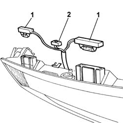

5540A95 No. plate light (one) - R.R. with no. plate holder removed
- Path
- Procedures > 55 ELECTRICAL EQUIPMENT > 5540 EXTERIOR LIGHTING > 5540A lighting > 5540A95 No. plate light (one) - R.R. with no. plate holder removed
- Kind
- repair procedure (removal / refitting; the operation number is the code)
- Applies to
- all engines; all production periods
- Interactive page
- https://sloeber94.github.io/elrnDB-lThss/en/#/148473
Applies to: all engines; all production periods
 Removing
Removing
 Refitting
Refitting1. Release the no. plate lights from the housing.
2. Release the sensor from the retaining spring.
- Remove the number plate lights complete with wiring and proximity sensor.

Applies to: all engines; all production periods
Refitting
Removing- Fit the number plate lights in the housing.
- Secure the sensor to the retaining spring.